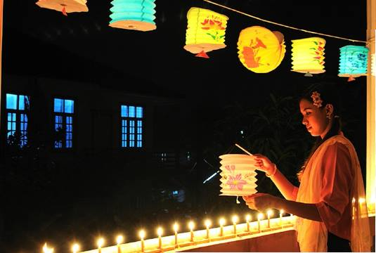
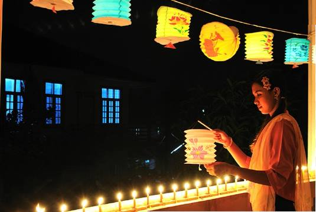

How do we celebrate?
Illuminating and decorating houses, streets, public buldings, etc.
Illuminating and decorating houses, pagodas, and buildings with electric lights, candles, and lanterns is one of the main activity of Thadingyut, which represents welcoming Buddha's decent from heaven with brightness. Every houses, buildings, parks, and streets are festooned and lit.
 

Going to pagodas and monasteries
During the festive days, Myanmar people perform good deeds. They go to pagodas and monasteries offering foods to monks and nuns. Some buddhists fast on the Thadingyut full-moon day. The pagodas and monasteries are crowded with pilgrims on Thadingyut holidays.
Paying homage to parents, teachers, and elders
Thanksgiving and paying homage to parents, teachers, elderly relatives and offering them fruits and gifts is a big part of Thadingyut. Young people ask forgiveness for any committed misdeeds. After paying homage, they get pocket money or sometimes snacks and sweets from elders, which is a joyful part of it.
Playing with fireworks
On Thadingyut holidays, some people like to play with sparklers, firecrackers and fire balloons, some people like to watch firework display as fireworks have now gone on to become a crowd-pleasing way to mark special occasions. Skies are filled with colored lights. Children are free and happy as their schools are closed for the Thadingyut holidays.